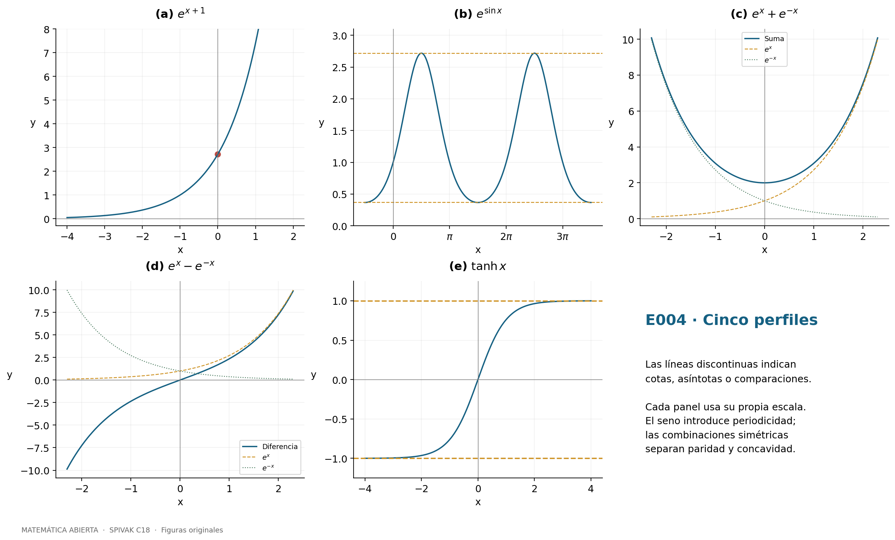
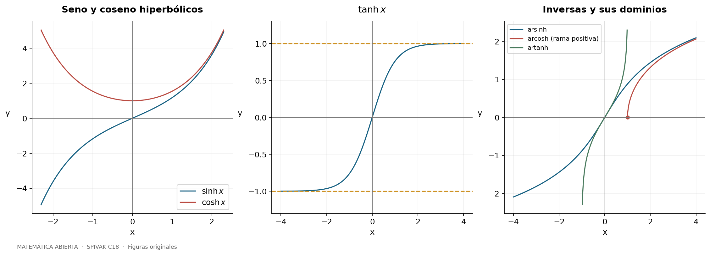
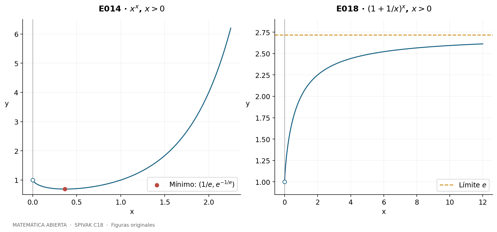
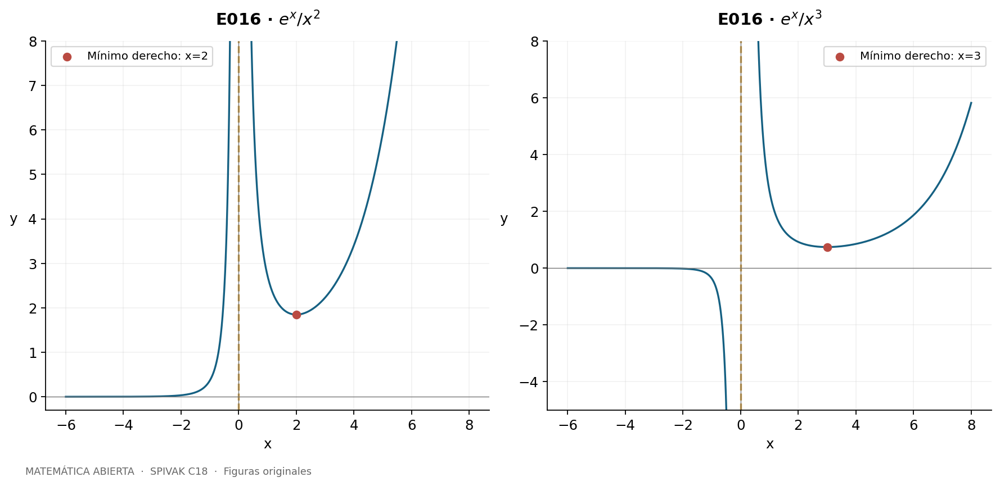
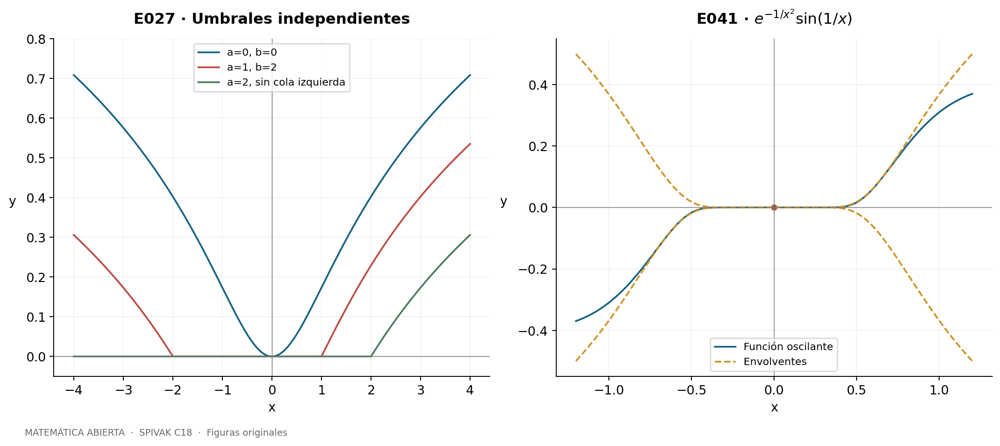
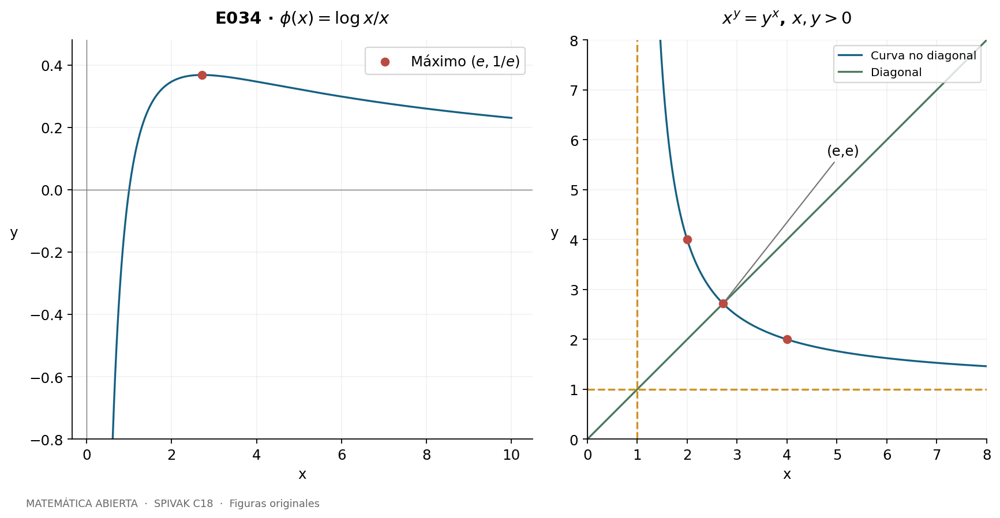
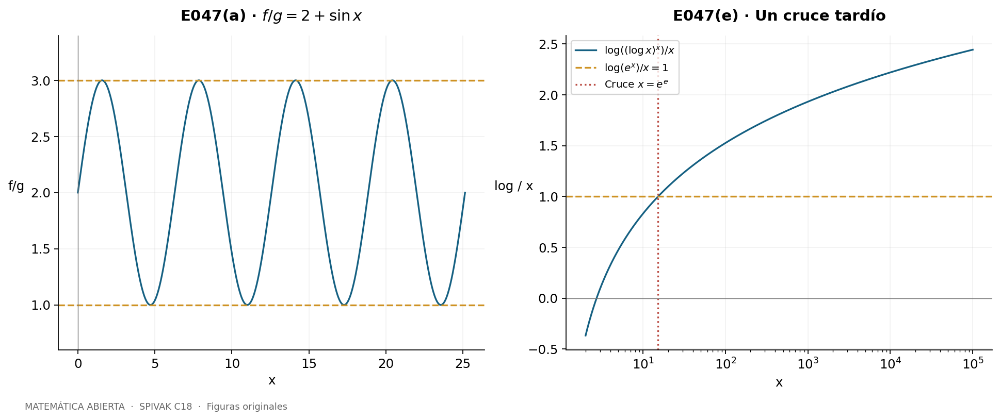

Capítulo 18 — El logaritmo y las funciones exponenciales
A. Peña · Matemática Abierta · 2026-10-15.
49 problemas resueltos completos, con sus incisos, figuras originales y revisión matemática interna. Fuente primaria: Michael Spivak, Calculus, 4.ª edición, capítulo 18, pp. 339–362; problemas en pp. 351–362 (PDF 371–382). C19 comienza en p. 363. No hay apéndice de C18.
Se conservan los datos y tareas matemáticos indispensables y se desarrollan soluciones propias en español. Las referencias permiten localizar cada original. Las potencias de base variable se interpretan mediante \(u^v=\exp(v\log u)\) para \(u>0\), salvo potencias enteras y raíces reales expresamente indicadas. \(\log\) denota logaritmo natural; \(\log_a\) exige \(a>0\), \(a\ne1\). Los teoremas de derivación se aplican en interiores de sus dominios. Una letra \(C\) en una primitiva es una constante arbitraria en cada intervalo conexo.
Herramientas del capítulo
La definición \(L(x)=\int_1^x dt/t\) da \(L'(x)=1/x\), monotonía estricta y \(L(xy)=L(x)+L(y)\): para \(y\) fijo, \(L(xy)-L(x)\) tiene derivada cero y vale \(L(y)\) en \(x=1\). El cambio \(t=2u\) muestra que cada intervalo \([2^j,2^{j+1}]\) aporta la misma integral positiva; por tanto \(L\) no está acotada superiormente. Como \(L(1/x)=-L(x)\), tampoco lo está inferiormente. Su inversa \(E:\mathbb R\to(0,\infty)\) satisface
\[E'=E,\qquad E(s+t)=E(s)E(t),\qquad E(0)=1.\]
Se escribe \(e=E(1)\) y \(E(x)=e^x\). En particular,
\[(a^x)'=(\log a)a^x,\qquad (u^v)'=u^v\left(v'\log u+v\frac{u'}u\right),\qquad (\log_a x)'=\frac1{x\log a}.\]
La segunda fórmula procede de derivar \(\exp(v\log u)\), no de tratar el exponente variable como constante. En las pruebas de límites se indica cuándo se usa l’Hôpital. E032 y E046 desarrollan construcciones alternativas sin suponer los resultados que están justificando.
E001 — Derivadas y dominios
Fuente: Spivak, Calculus, 4.ª ed., C18, problema 1, p. 351 (PDF: página impresa + 20).
SPV4-C18-E001-i Para la torre \(f(x)=e^{e^{e^{e^x}}}\), definamos \(u_1=e^x\) y \(u_{j+1}=e^{u_j}\). Cada nivel aporta la derivada de su exponente; así \[f'=u_4u_3u_2u_1=e^{e^{e^{e^x}}}e^{e^{e^x}}e^{e^x}e^x.\] Está definida y es derivable para todo real.
SPV4-C18-E001-ii Sean \(A=e^{1+e^{1+x}}\), \(B=1+A\), \(C=1+\log B\) y \(D=1+\log C\). La función pedida es \(\log D\). Todos los argumentos son positivos y la cadena da \[f'=\frac{Ae^{1+x}}{BCD}.\] Aquí \(A'=Ae^{1+x}\); hay tres logaritmos y dos exponenciales variables.
SPV4-C18-E001-iii Para \(f=(\sin x)^{\sin(\sin x)}\), con \(\sin x>0\), derivamos su logaritmo: \[f'=f\left[\cos(\sin x)\cos x\log(\sin x)+\sin(\sin x)\cot x\right].\]
SPV4-C18-E001-iv Si \(F(x)=\int_0^x e^{-t^2}dt\), el teorema fundamental da \(F'=e^{-x^2}\). Por ello \[\left(e^{F(x)}\right)'=e^{F(x)}e^{-x^2}.\] No hace falta una primitiva elemental del integrando; dominio \(\mathbb R\).
SPV4-C18-E001-v Sea \(s=\sin x>0\), \(u=s^s\) y \(f=s^u\). Primero \(u'=u\cos x(1+\log s)\). Después \[f'=fu\left[\cos x(1+\log s)\log s+\cot x\right].\] Se respeta la asociación \(s^{(s^s)}\).
SPV4-C18-E001-vi Como \(\log_{e^x}(\sin x)=\log(\sin x)/x\), para \(x\ne0\) y \(\sin x>0\), \[f'=\frac{x\cot x-\log(\sin x)}{x^2}.\] La base variable \(e^x\) no puede ser 1.
SPV4-C18-E001-vii El dato literal es \([\arcsin(x/\sin x)]^{\log(\sin e^x)}\). No tiene dominio real. Si \(x\ne0\) y \(\sin x\ne0\), la desigualdad estricta \(|\sin x|<|x|\) da \(|x/\sin x|>1\); en los ceros de \(\sin x\) el cociente no existe. En particular, \(x=0\) tampoco está definido. Por tanto no hay derivada real que calcular. La notación formal de la regla de la cadena no subsana este defecto. Se conserva el enunciado literal y no se sustituye silenciosamente por \(\arcsin(\sin x/x)\).
SPV4-C18-E001-viii El coeficiente \(\log(3+e^4)\) es constante. En \(0<x<1\), \[f'=4\log(3+e^4)e^{4x}+\frac{(\log3)(\arcsin x)^{\log3-1}}{\sqrt{1-x^2}}.\] El dato es \(\log(3+e^4)e^{4x}+(\arcsin x)^{\log3}\). Admitiendo la extensión \(0^{\log3}=0\), en \(x=0\) existe derivada derecha y el segundo sumando aporta cero, pues \(\log3>1\) y \(\arcsin x/x\to1\). En \(x=1\) el segundo término tiene pendiente infinita; no se declara derivada ordinaria en los extremos.
SPV4-C18-E001-ix Para \(f=(\log x)^{\log x}\), \(x>1\), \[f'=\frac{f}{x}[1+\log(\log x)].\] El requisito \(x>1\) asegura que la base del exponente real sea positiva.
SPV4-C18-E001-x Para \(x>0\), \(x^x=e^{x\log x}\) y \[(x^x)'=x^x(1+\log x).\]
SPV4-C18-E001-xi La función es \(\sin(x^{\sin(x^{\sin x})})\). Para \(x>0\), pongamos \[u=x^{\sin x},\quad v=\sin u,\quad w=x^v.\] Entonces \(u'=u[\cos x\log x+\sin x/x]\), \(v'=\cos u\,u'\) y \(w'=w[v'\log x+v/x]\). La respuesta, con cada cadena visible, es \[f'=\cos w\,w\left\{\cos u\,u\left[\cos x\log x+\frac{\sin x}{x}\right]\log x+\frac{\sin u}{x}\right\}.\]
E002 — Diferenciación logarítmica
Fuente: Spivak, Calculus, 4.ª ed., C18, problema 2, p. 351–352 (PDF: página impresa + 20).
SPV4-C18-E002-a Para \(f>0\) diferenciable, la regla de la cadena produce \((\log f)'=f'/f\). Multiplicar por \(f\) recupera \(f'\). Para funciones sin ceros de signo negativo se usa \(\log|f|\); E020 justifica esa extensión. En un cero, esta división no es válida.
SPV4-C18-E002-b-i Si \(f=(1+x)(1+e^{x^2})\), entonces, donde \(f\ne0\), \[\frac{f'}f=\frac1{1+x}+\frac{2xe^{x^2}}{1+e^{x^2}}.\] Al multiplicar y simplificar se obtiene, para todo \(x\), \[f'=1+e^{x^2}+2x(1+x)e^{x^2}.\] En \(x=-1\), que se había excluido al tomar logaritmos, la fórmula directa da \(1+e\).
SPV4-C18-E002-b-ii Sea \[f(x)=\frac{(3-x)^{1/3}x^2}{(1-x)(3+x)^{2/3}},\] con raíces cúbicas reales. Su dominio es \(\mathbb R\setminus\{-3,1\}\). Donde además \(x\ne0,3\), tomar \(\log|f|\) da \[f'=f\left[-\frac1{3(3-x)}+\frac2x+\frac1{1-x}-\frac2{3(3+x)}\right].\] Cada signo viene de derivar un término de \(\frac13\log|3-x|+2\log|x|-\log|1-x|-\frac23\log|3+x|\). En \(x=0\) la forma original es \(x^2\) por un factor suave, luego \(f'(0)=0\). En \(x=3\), el factor que multiplica \((3-x)^{1/3}\) es no nulo, de modo que el cociente incremental tiene magnitud proporcional a \(|h|^{-2/3}\): no hay derivada finita.
SPV4-C18-E002-b-iii En los intervalos donde seno y coseno son positivos se diferencian los dos sumandos por separado: \[\begin{aligned}
f'={}&(\sin x)^{\cos x}[-\sin x\log(\sin x)+\cos x\cot x]\\
&+(\cos x)^{\sin x}[\cos x\log(\cos x)-\sin x\tan x].
\end{aligned}\] El logaritmo de una suma no es la suma de sus logaritmos.
SPV4-C18-E002-b-iv Para \(f=(e^x-e^{-x})/[e^{2x}(1+x^3)]\), \(x\ne-1\), el cálculo con \(\log|f|\) da, si \(x\ne0\), \[f'=f\left[\frac{e^x+e^{-x}}{e^x-e^{-x}}-2-\frac{3x^2}{1+x^3}\right].\] En \(0\), se vuelve al cociente original: numerador cero, derivada del numerador 2 y denominador 1, así que \(f'(0)=2\). Para evitar la singularidad removible puede escribirse en todo su dominio \[f'=\frac{e^{-x}+e^{-3x}}{1+x^3}-\frac{(e^{-x}-e^{-3x})[2(1+x^3)+3x^2]}{(1+x^3)^2}.\]
E003 — Integral de una derivada logarítmica
Fuente: Spivak, Calculus, 4.ª ed., C18, problema 3, p. 352 (PDF: página impresa + 20).
SPV4-C18-E003 Si \(f>0\) en \([a,b]\) y \(f'/f\) es integrable (por ejemplo, \(f\in C^1\)), E002 y el teorema fundamental dan \[\int_a^b\frac{f'(x)}{f(x)}dx=\log f(b)-\log f(a)=\log\frac{f(b)}{f(a)}.\] La mera diferenciabilidad no garantiza una integral de Riemann propia de la derivada. Por ejemplo, \(f(0)=2\), \(f(x)=2+x^2\sin(1/x^2)\) en \([0,1/2]\) es positiva y diferenciable, pero su derivada \(2x\sin(1/x^2)-2\cos(1/x^2)/x\) no está acotada. La fórmula debe entenderse con la hipótesis de existencia de la integral.
E004 — Cinco gráficas exponenciales
Fuente: Spivak, Calculus, 4.ª ed., C18, problema 4, p. 352 (PDF: página impresa + 20).
SPV4-C18-E004-a \(e^{x+1}\) es la exponencial trasladada una unidad a la izquierda; pasa por \((0,e)\), crece estrictamente, es convexa y tiene asíntota \(y=0\) hacia \(-\infty\).
SPV4-C18-E004-b \(e^{\sin x}\) tiene período \(2\pi\) y rango \([e^{-1},e]\). Su derivada \(e^{\sin x}\cos x\) cambia de positiva a negativa en \(\pi/2+2k\pi\) (máximos \(e\)) y de negativa a positiva en \(3\pi/2+2k\pi\) (mínimos \(e^{-1}\)). La segunda derivada es \(e^{\sin x}(\cos^2x-\sin x)\): las inflexiones satisfacen \(\sin x=(\sqrt5-1)/2\).
SPV4-C18-E004-c \(e^x+e^{-x}\) es par, estrictamente convexa y tiene mínimo 2 en 0. Decrece a la izquierda y crece a la derecha; diverge en ambos extremos. Supera a cada una de las curvas \(e^x\) y \(e^{-x}\); su diferencia con \(e^x\) tiende a cero a la derecha y con \(e^{-x}\) a la izquierda.
SPV4-C18-E004-d \(e^x-e^{-x}\) es impar, pasa por el origen y crece en toda la recta porque su derivada es \(e^x+e^{-x}>0\). Tiene inflexión en 0, concavidad negativa antes y positiva después. Queda por debajo de \(e^x\); su diferencia con ella es \(-e^{-x}\), que tiende a cero a la derecha. A la izquierda se aproxima a \(-e^{-x}\), con diferencia \(e^x\); la lámina permite compararla también con la curva positiva \(e^{-x}\).
SPV4-C18-E004-e \((e^x-e^{-x})/(e^x+e^{-x})=\tanh x\) es impar, de rango \((-1,1)\), creciente con derivada \(4/(e^x+e^{-x})^2>0\). Tiene asíntotas \(y=\pm1\) y una inflexión en 0; es convexa para \(x<0\) y cóncava para \(x>0\).

E005 — Límites por l’Hôpital
Fuente: Spivak, Calculus, 4.ª ed., C18, problema 5, p. 352 (PDF: página impresa + 20).
Todos los cocientes son \(0/0\) al tender \(x\) a cero; los denominadores derivados no se anulan para \(x\ne0\) cerca de cero.
SPV4-C18-E005-i Para \((e^x-1-x-x^2/2)/x^2\), dos aplicaciones dan \((e^x-1)/2\to\boxed0\).
SPV4-C18-E005-ii Para \((e^x-1-x-x^2/2-x^3/6)/x^3\), tres aplicaciones dan \((e^x-1)/6\to\boxed0\).
SPV4-C18-E005-iii Con el numerador de (i) y denominador \(x^3\), tres aplicaciones dan \(e^x/6\to\boxed{1/6}\).
SPV4-C18-E005-iv Sea \(N=\log(1+x)-x+x^2/2\). Entonces \(N'=1/(1+x)-1+x\), \(N''=1-1/(1+x)^2\) y \(N^{(3)}=2/(1+x)^3\). Dos aplicaciones a \(N/x^2\) dan \(N''/2\to\boxed0\).
SPV4-C18-E005-v Tres aplicaciones a \(N/x^3\) dan \(N^{(3)}/6\to\boxed{1/3}\).
SPV4-C18-E005-vi El numerador \(N-x^3/3\) tiene primeras dos derivadas nulas en cero y tercera derivada \(2/(1+x)^3-2\). Tres aplicaciones, con denominador \(x^3\), dan \([2/(1+x)^3-2]/6\to\boxed0\).
Se han usado derivadas, sin presuponer desarrollos de Taylor.
E006 — Límites de potencias indeterminadas
Fuente: Spivak, Calculus, 4.ª ed., C18, problema 6, p. 352 (PDF: página impresa + 20).
Se toma logaritmo en una vecindad con base positiva y se exponencia el límite finito obtenido.
SPV4-C18-E006-i \(\log((1-x)^{1/x})=\log(1-x)/x\to-1\) por l’Hôpital; límite \(\boxed{e^{-1}}\).
SPV4-C18-E006-ii Para \(x\to\pi/4\), \[\log((\tan x)^{\tan2x})=\frac{\log(\tan x)}{\cot2x}\longrightarrow\frac{2}{-2}=-1.\] El denominador deriva a \(-2\csc^2(2x)\) y el numerador a \(1/(\sin x\cos x)\). Límite \(\boxed{e^{-1}}\) por ambos lados dentro de la vecindad positiva.
SPV4-C18-E006-iii \(\log((\cos x)^{1/x^2})=\log(\cos x)/x^2\to-1/2\), pues tras una aplicación queda \(-\tan x/(2x)\). Límite \(\boxed{e^{-1/2}}\).
E007 — Gráficas hiperbólicas
Fuente: Spivak, Calculus, 4.ª ed., C18, problema 7, p. 353 (PDF: página impresa + 20).
SPV4-C18-E007 Las definiciones son \(\sinh x=(e^x-e^{-x})/2\), \(\cosh x=(e^x+e^{-x})/2\) y \(\tanh x=\sinh x/\cosh x\). Las dos primeras gráficas son las de E004(d,c) con ordenadas divididas entre 2. \(\sinh\) es impar, creciente y de rango \(\mathbb R\); \(\cosh\) es par, convexa, de mínimo 1 y rango \([1,\infty)\). \(\tanh\) conserva la gráfica de E004(e). Se representan expresamente las tres funciones.

E008 — Identidades y derivadas hiperbólicas
Fuente: Spivak, Calculus, 4.ª ed., C18, problema 8, p. 353 (PDF: página impresa + 20).
Escribamos \(u=e^x\), de modo que \(e^{-x}=1/u\).
SPV4-C18-E008-a \(\cosh^2x-\sinh^2x=[(u+u^{-1})^2-(u-u^{-1})^2]/4=1\).
SPV4-C18-E008-b Dividir (a) por \(\cosh^2x>0\) da \(\tanh^2x+1/\cosh^2x=1\).
SPV4-C18-E008-c Al expandir \(\sinh x\cosh y+\cosh x\sinh y\), se cancelan los términos \(e^{x-y}\) y \(e^{-x+y}\) y quedan \((e^{x+y}-e^{-(x+y)})/2=\sinh(x+y)\).
SPV4-C18-E008-d La expansión de \(\cosh x\cosh y+\sinh x\sinh y\) cancela los mismos términos mixtos y deja \((e^{x+y}+e^{-(x+y)})/2=\cosh(x+y)\).
SPV4-C18-E008-e \(\sinh' x=(e^x+e^{-x})/2=\cosh x\).
SPV4-C18-E008-f \(\cosh' x=(e^x-e^{-x})/2=\sinh x\).
SPV4-C18-E008-g La regla del cociente y (a) dan \(\tanh' x=(\cosh^2x-\sinh^2x)/\cosh^2x=1/\cosh^2x\).
E009 — Inversas hiperbólicas y ramas
Fuente: Spivak, Calculus, 4.ª ed., C18, problema 9, p. 353 (PDF: página impresa + 20).
Se invierte \(\sinh\) en \(\mathbb R\), \(\cosh\) restringida a \([0,\infty)\) y \(\tanh\) en \(\mathbb R\).
SPV4-C18-E009-a Si \(t=\operatorname{arcosh}x\), entonces \(t\ge0\), \(x\ge1\) y \(\sinh t\ge0\). De E008(a), \(\sinh(\operatorname{arcosh}x)=\sqrt{x^2-1}\). La raíz es la positiva.
SPV4-C18-E009-b Para \(t=\operatorname{arsinh}x\), \(\cosh t>0\) y \(\cosh(\operatorname{arsinh}x)=\sqrt{1+x^2}\) para todo real \(x\).
SPV4-C18-E009-c Por la derivada inversa y (b), \((\operatorname{arsinh}x)'=1/\sqrt{1+x^2}\) en toda la recta.
SPV4-C18-E009-d En \(x>1\), \((\operatorname{arcosh}x)'=1/\sqrt{x^2-1}\). En \(x=1\) la inversa está definida pero tiene pendiente derecha infinita, pues \(\sinh0=0\).
SPV4-C18-E009-e En \(|x|<1\), E008(b,g) da \((\operatorname{artanh}x)'=1/(1-x^2)\). Fuera de ese intervalo no existe inversa real de \(\tanh\).
E010 — Fórmulas logarítmicas e integrales
Fuente: Spivak, Calculus, 4.ª ed., C18, problema 10, p. 354 (PDF: página impresa + 20).
SPV4-C18-E010-a Para invertir \(x=(e^t-e^{-t})/2\), sea \(u=e^t>0\). La ecuación \(u^2-2xu-1=0\) tiene única raíz positiva \(u=x+\sqrt{x^2+1}\), luego \[\operatorname{arsinh}x=\log(x+\sqrt{1+x^2}),\quad x\in\mathbb R.\] Para \(x=(u+u^{-1})/2\) y la rama \(t\ge0\), se requiere \(u\ge1\), por lo que \[\operatorname{arcosh}x=\log(x+\sqrt{x^2-1}),\quad x\ge1.\] Finalmente, \(x=(u^2-1)/(u^2+1)\) equivale a \(u^2=(1+x)/(1-x)\) y da \[\operatorname{artanh}x=\tfrac12\log\frac{1+x}{1-x},\quad |x|<1.\] Las otras raíces de las cuadráticas no cumplen la positividad o la rama elegida.
SPV4-C18-E010-b Derivar las fórmulas anteriores y aplicar el teorema fundamental produce \[\int_a^b\frac{dx}{\sqrt{1+x^2}}=[\log(x+\sqrt{1+x^2})]_a^b,\] para cualesquiera \(a,b\). Si \(a,b\) pertenecen a un mismo componente de \((-\infty,-1)\cup(1,\infty)\), \[\int_a^b\frac{dx}{\sqrt{x^2-1}}=[\log|x+\sqrt{x^2-1}|]_a^b.\] En el componente negativo esta primitiva es \(-\operatorname{arcosh}(-x)\), no \(\operatorname{arcosh}x\). Para \(a,b\in(-1,1)\), \[\int_a^b\frac{dx}{1-x^2}=\frac12\left[\log\frac{1+x}{1-x}\right]_a^b.\] También se obtiene la última descomponiendo \(1/(1-x^2)=\frac12[1/(1-x)+1/(1+x)]\). No se atraviesan los polos \(\pm1\) con una integral propia.
E011 — Una integral no acotada
Fuente: Spivak, Calculus, 4.ª ed., C18, problema 11, p. 354 (PDF: página impresa + 20).
SPV4-C18-E011 Sea \(F(x)=\int_2^x dt/\log t\), \(x\ge2\). Para \(t\ge2\), \(0<\log t\le t\), de modo que \[F(x)\ge\int_2^x\frac{dt}{t}=\log(x/2)\longrightarrow\infty.\] En particular, \(F\) no está acotada en \([2,\infty)\).
E012 — Promedios logarítmicos de una función monótona
Fuente: Spivak, Calculus, 4.ª ed., C18, problema 12, p. 354 (PDF: página impresa + 20).
SPV4-C18-E012 Sea \(f\) no decreciente en \([1,\infty)\) y \(F(x)=\int_1^x f(t)dt/t\). La monotonía asegura integrabilidad en cada compacto. El cociente se considera en \(x>1\), porque en 1 es \(0/0\).
Si \(|f|\le M\), entonces \(|F(x)|\le M\log x\) y \(F(x)/\log x\) está acotado. Recíprocamente, supongamos \(F(x)/\log x\le K\) para todo \(x>1\); una cota absoluta implica esta cota superior. Para \(y>1\), dividimos en \([1,y]\) y \([y,y^2]\). La monotonía da \[F(y^2)\ge f(1)\log y+f(y)\log y.\] Como \(\log(y^2)=2\log y\), resulta \(f(y)\le2K-f(1)\). Además \(f(y)\ge f(1)\): \(f\) está acotada por ambos lados, incluso si toma valores negativos. No se presupone continuidad ni \(f(1+)=f(1)\).
E013 — Comparación de potencias, logaritmos y exponenciales
Fuente: Spivak, Calculus, 4.ª ed., C18, problema 13, p. 354 (PDF: página impresa + 20).
Se toma \(n\) entero positivo.
SPV4-C18-E013-a Si \(0<a<1\), \(\log a<0\) y \(a^x=e^{x\log a}\to0\) cuando \(x\to\infty\).
SPV4-C18-E013-b Con \(u=\log x\to\infty\), \(x/(\log x)^n=e^u/u^n\to\infty\). Para demostrarlo sin remitir a la conclusión, aplicamos l’Hôpital \(n\) veces a \(u^n/e^u\): el último cociente es \(n!/e^u\to0\), y todos son positivos para \(u>0\).
SPV4-C18-E013-c Invertir el cociente positivo anterior da \((\log x)^n/x\to0\).
SPV4-C18-E013-d Cuando \(x\to0^+\), sea \(u=-\log x\to\infty\). Entonces \(x(\log x)^n=(-1)^n u^ne^{-u}\to0\) por (b), independientemente de su signo.
SPV4-C18-E013-e \(\log(x^x)=x\log x\to0\) por (d), así que \(x^x\to1\) cuando \(x\to0^+\).
E014 — La curva de x elevado a x
Fuente: Spivak, Calculus, 4.ª ed., C18, problema 14, p. 354 (PDF: página impresa + 20).
SPV4-C18-E014 Para \(x>0\), \(f=x^x\) satisface \[f'=f(1+\log x),\qquad f''=f\left[(1+\log x)^2+\frac1x\right]>0.\] Decrece en \((0,e^{-1})\), crece en \((e^{-1},\infty)\) y tiene mínimo global \(e^{-1/e}\) en \(x=e^{-1}\). Es estrictamente convexa. E013(e) da límite 1 en \(0^+\), pero \((0,1)\) no pertenece al dominio original; hacia infinito diverge. Pasa por \((1,1)\).

E015 — Dominio exponencial mediante una cota de la derivada
Fuente: Spivak, Calculus, 4.ª ed., C18, problema 15, p. 354 (PDF: página impresa + 20).
SPV4-C18-E015-a Para \(n\ge1\) y \(x>0\), sea \(f=e^x/x^n\). Su derivada es \(e^x(x-n)/x^{n+1}\); decrece hasta \(n\) y crece después. En particular, para \(x>n\), \[f(x)>f(n)=\frac{e^n}{n^n}.\]
SPV4-C18-E015-b Si \(x>n+1\), aplicar (a) al exponente \(n+1\) da \[f'(x)=(x-n)\frac{e^x}{x^{n+1}}>\frac{e^{n+1}}{(n+1)^{n+1}}=:m>0.\] El teorema del valor medio implica \(f(x)\ge f(n+1)+m(x-n-1)\) para \(x>n+1\). Por tanto \(f(x)\to\infty\), no solo que sea creciente. Si se incluye \(n=0\), la conclusión de crecimiento es directamente \(e^x\to\infty\); el argumento de mínimo en \(x=n\) se formuló para \(n\ge1\).
E016 — Gráficas de la exponencial dividida por una potencia
Fuente: Spivak, Calculus, 4.ª ed., C18, problema 16, p. 354 (PDF: página impresa + 20).
SPV4-C18-E016 Para \(n\ge1\) el dominio natural es \(x\ne0\). Además de la derivada de E015, \[f''(x)=\frac{e^x}{x^n}\frac{(x-n)^2+n}{x^2}.\] En \(x>0\), la gráfica es convexa, tiene mínimo \(e^n/n^n\) en \(n\), y diverge tanto en \(0^+\) como en \(+\infty\). En \(x<0\), el factor \(1-n/x\) es positivo, por lo que \(f'\) y \(f''\) tienen el signo de \(f\). Si \(n\) es par, la rama izquierda es positiva, creciente y convexa, desde \(0^+\) en \(-\infty\) hasta \(+\infty\) en \(0^-\). Si \(n\) es impar es negativa, decreciente y cóncava, desde \(0^-\) hasta \(-\infty\). La asíntota izquierda es \(y=0\) y la vertical es \(x=0\). Se muestran ambas paridades; ningún trazo une las ramas a través del polo.

E017 — La constante e en límites de potencias
Fuente: Spivak, Calculus, 4.ª ed., C18, problema 17, p. 355 (PDF: página impresa + 20).
SPV4-C18-E017-a Por definición de derivada de \(\log\) en 1, \[\lim_{y\to0}\frac{\log(1+y)}y=\log'(1)=1.\] Esto evita l’Hôpital.
SPV4-C18-E017-b Sustituir \(y=1/x\) da \(x\log(1+1/x)\to1\) cuando \(x\to\infty\).
SPV4-C18-E017-c Exponenciar (b) da \((1+1/x)^x\to e\).
SPV4-C18-E017-d Si \(a\ne0\), con \(y=a/x\), \(x\log(1+a/x)=a\log(1+y)/y\to a\); la base es positiva para \(x\) suficientemente grande. El límite es \(e^a\). Para \(a=0\) es constantemente 1.
SPV4-C18-E017-e Para \(b>0\), sea \(c=\log b\). Si \(c\ne0\), con \(u=c/x\), \[x(b^{1/x}-1)=c\frac{e^u-1}{u}\to c\] por la derivada de \(\exp\) en 0. Si \(b=1\), el cociente original es cero. El resultado es \(\log b\) en ambos casos.
E018 — Gráfica del límite clásico de e
Fuente: Spivak, Calculus, 4.ª ed., C18, problema 18, p. 355 (PDF: página impresa + 20).
SPV4-C18-E018 Sea \(f=(1+1/x)^x\), \(x>0\), y \(L=\log f=x\log(1+1/x)\). Entonces \[L'=\log(1+1/x)-\frac1{x+1}>0,\qquad L''=-\frac1{x(x+1)^2}<0.\] La desigualdad estricta se obtiene de \(\log(1+t)=\int_0^t du/(1+u)>t/(1+t)\), \(t>0\). Por ello \(f\) es creciente. Su límite en infinito es \(e\) por E017; en cero es 1, pues con \(u=1/x\), \(L=\log(1+u)/u\to0\). Ninguna de las dos ordenadas extremas se alcanza.
La gráfica es además cóncava. En efecto, \(L'=\int_0^1 t/(x+t)^2dt\) y \(-L''=2\int_0^1 t/(x+t)^3dt\). Schwarz da \[(L')^2\le\left(\int_0^1\frac{t}{(x+t)^3}dt\right)\left(\int_0^1\frac{t}{x+t}dt\right)<-L''/2.\] Así \(f''=f[(L')^2+L'']<0\). La lámina de E014 incluye esta curva y las dos ordenadas límite.
E019 — Capitalización como modelo matemático
Fuente: Spivak, Calculus, 4.ª ed., C18, problema 19, p. 355 (PDF: página impresa + 20).
SPV4-C18-E019 Sea \(r=a/100\ge0\) la tasa anual del modelo. Con capital inicial 1 y \(k\) períodos iguales, el capital final es \((1+r/k)^k\). Si \(r>0\), \(\log(1+r/k)<r/k\) muestra que cada capital es menor que \(e^r\), mientras que E017(d) prueba que tienden a \(e^r\) al crecer \(k\). Por definición de supremo, el mayor valor límite es \(\boxed{e^{a/100}}\); no se alcanza con un \(k\) finito cuando \(a>0\). Para \(a=0\), todos los valores son 1. Para capital inicial \(P\), se multiplica por \(P\). La afirmación es sobre el modelo de tasa constante del ejercicio.
E020 — Logaritmos de valores absolutos
Fuente: Spivak, Calculus, 4.ª ed., C18, problema 20, p. 355 (PDF: página impresa + 20).
SPV4-C18-E020-a Si \(x>0\), \(\log|x|=\log x\). Si \(x<0\), es \(\log(-x)\) y su derivada es \((-1)/(-x)=1/x\). Por tanto \((\log|x|)'=1/x\) en \(\mathbb R\setminus\{0\}\).
SPV4-C18-E020-b Para \(f\) diferenciable y \(f(x)\ne0\), la cadena aplicada a (a) da \((\log|f|)'=f'/f\). Localmente el signo de \(f\) es constante por continuidad. En un cero de \(f\) el logaritmo no está definido y no se divide por \(f\).
E021 — Todas las soluciones de una ecuación exponencial
Fuente: Spivak, Calculus, 4.ª ed., C18, problema 21, p. 355 (PDF: página impresa + 20).
Se trabaja en un intervalo conexo.
SPV4-C18-E021-a Si \(f'=cf\) y \(f\) no se anula, E020 da \((\log|f|)'=c\), luego \(\log|f|=cx+d\) por el valor medio. Así \(|f|=e^de^{cx}\). La continuidad obliga a que el signo sea constante; por ello \(f=ke^{cx}\) con \(k\ne0\).
SPV4-C18-E021-b Para una solución cualquiera, el conjunto \(\{f\ne0\}\) es abierto. En cada componente se aplica (a). Un extremo finito interior al intervalo de definición no puede tener valor cero, pues el límite de \(ke^{cx}\) allí es no nulo. Por continuidad sería un punto interior del mismo conjunto, contradicción. Si hay algún punto no nulo, su componente ocupa todo el intervalo; si no lo hay, \(f\equiv0\). Se incluyen, por tanto, exactamente las funciones \(ke^{cx}\), ahora con \(k\) arbitrario.
SPV4-C18-E021-c Una prueba que trata los ceros de una vez consiste en derivar \(fe^{-cx}\): su derivada es \(e^{-cx}(f'-cf)=0\). El valor medio lo hace constante y vuelve a dar \(f=ke^{cx}\).
SPV4-C18-E021-d Si \(f'=fg'\) con \(g\) diferenciable, entonces \((fe^{-g})'=e^{-g}(f'-fg')=0\). Todas las soluciones son \(f=ke^g\), incluso \(k=0\); la sustitución verifica la recíproca.
E022 — Decaimiento y semivida
Fuente: Spivak, Calculus, 4.ª ed., C18, problema 22, p. 355–356 (PDF: página impresa + 20).
SPV4-C18-E022-a En el modelo \(A'=cA\), \(c<0\), E021 da \(A(t)=A(0)e^{ct}\). La constante negativa de la ecuación es el opuesto de una tasa positiva \(\lambda=-c\); no es una probabilidad negativa.
SPV4-C18-E022-b Para \(A(0)>0\), \(A(t+\tau)=A(t)/2\) equivale a \(e^{c\tau}=1/2\), luego \[\tau=-\frac{\log2}{c}=\frac{\log2}{\lambda}.\] No depende del instante ni de la cantidad inicial positiva. Si \(A(0)=0\), la solución es nula y la igualdad por sí sola no determina un único tiempo; el parámetro del modelo sigue siendo \(\log2/\lambda\).
E023 — Ley de enfriamiento
Fuente: Spivak, Calculus, 4.ª ed., C18, problema 23, p. 356 (PDF: página impresa + 20).
SPV4-C18-E023 Para ambiente constante \(M\) y coeficiente \(k>0\), la ecuación es \(T'=-k(T-M)\). Con \(u=T-M\), resulta \(u'=-ku\), y E021 da \[T(t)=M+(T(0)-M)e^{-kt}.\] La sustitución verifica la ecuación y el dato inicial. Si \(T(0)>M\) hay enfriamiento; si es menor, calentamiento; si es igual, equilibrio. En los dos primeros casos la temperatura se acerca a \(M\) sin cruzarla en tiempo finito.
E024 — Una ecuación integral homogénea
Fuente: Spivak, Calculus, 4.ª ed., C18, problema 24, p. 356 (PDF: página impresa + 20).
SPV4-C18-E024 Si \(f(x)=\int_0^x f(t)dt\), la igualdad hace continua a \(f\) siempre que las integrales propias existan localmente. Por el teorema fundamental, \(f'=f\) y, evaluando en cero, \(f(0)=0\). E021 implica \(f\equiv0\). Esta función satisface la igualdad, así que es la única.
E025 — Constantes de integración y parte del dominio no observada
Fuente: Spivak, Calculus, 4.ª ed., C18, problema 25, p. 356 (PDF: página impresa + 20).
SPV4-C18-E025-i La igualdad \(\int_0^x f(t)dt=e^x\) es imposible: en \(x=0\) exigiría \(0=1\). Derivar y obtener \(f=e^x\) no resuelve la igualdad original, ya que su integral es \(e^x-1\).
SPV4-C18-E025-ii Si \(f\) es continua y \(\int_0^{x^2}f(t)dt=1-e^{2x^2}\), ponemos \(u=x^2\). Todo \(u\ge0\) es alcanzado, por lo que \[\int_0^u f(t)dt=1-e^{2u},\qquad f(u)=-2e^{2u}\quad(u\ge0).\] En cero el valor se obtiene por continuidad. En \(u<0\) la ecuación no observa a \(f\): cualquier función continua en \((-\infty,0]\) con valor \(-2\) en cero puede unirse a la rama anterior. Estas y solo estas son las soluciones continuas en toda la recta. Si se pide dominio \([0,\infty)\), la solución es única. Integrar la rama positiva comprueba la igualdad para todo \(x\).
E026 — Una constante definida por la propia función
Fuente: Spivak, Calculus, 4.ª ed., C18, problema 26, p. 356 (PDF: página impresa + 20).
SPV4-C18-E026 Sea \(C=\int_0^1 f(t)dt\). La ecuación \(f'=f+C\) hace que \(u=f+C\) satisfaga \(u'=u\), así que \(f=Ae^x-C\). Integrando entre 0 y 1, \[C=A(e-1)-C,\quad C=\frac{A(e-1)}2.\] Todas las soluciones son \[f(x)=A\left(e^x-\frac{e-1}2\right),\qquad A\in\mathbb R.\] Su integral en \([0,1]\) es precisamente \(A(e-1)/2\), y su derivada verifica la ecuación; no queda una constante independiente adicional.
E027 — Todas las soluciones de una ecuación integral no lineal
Fuente: Spivak, Calculus, 4.ª ed., C18, problema 27, p. 356 (PDF: página impresa + 20).
SPV4-C18-E027 Buscamos \(f\) continua en \(\mathbb R\) con \[f(x)^2=\int_0^x\frac{tf(t)}{1+t^2}dt.\] En cero, \(f(0)=0\). En cualquier intervalo donde \(f\ne0\), la raíz local de \(f^2\) es diferenciable; derivar y dividir por \(f\) da \(2f'=x/(1+x^2)\). Por tanto, con \(u(x)=\frac14\log(1+x^2)\), \[f(x)=u(x)+K\] en cada componente no nula.
En el semieje positivo, \(u\) es estrictamente creciente. Una componente \((a,b)\) con \(a\ge0\) tiene \(f(a)=0\) por continuidad (también si \(a=0\)), de modo que \(f=u-u(a)\). Si \(b\) fuese finito, no podría tener \(f(b)=0\) porque \(u(b)>u(a)\). Luego toda componente no nula derecha es una cola \((a,\infty)\) y solo puede haber una. El mismo argumento en el semieje negativo, donde \(u\) es estrictamente decreciente, deja una cola \((-\infty,-b)\). Así, con dos parámetros independientes \(a,b\in[0,\infty]\), todas las soluciones son \[f(x)=\begin{cases} \frac14\log\dfrac{1+x^2}{1+b^2},&x<-b,\quad b<\infty,\\ 0,&-b\le x\le a,\\ \frac14\log\dfrac{1+x^2}{1+a^2},&x>a,\quad a<\infty. \end{cases}\] El parámetro infinito significa ausencia de esa cola, sin evaluar una fórmula con \(\infty\). Todas son no negativas; la solución nula corresponde a ambos parámetros infinitos. Para verificar suficiencia, \(f^2\) es diferenciable incluso en las uniones porque allí \(f=0\) y crece a lo sumo linealmente. Su derivada es \(xf(x)/(1+x^2)\) y \(f(0)^2=0\); el teorema fundamental da la ecuación. \(f\) no necesita ser diferenciable en un umbral positivo. Dividir por \(f\) globalmente habría perdido estas soluciones con espera.

E028 — Desigualdad integral de Grönwall
Fuente: Spivak, Calculus, 4.ª ed., C18, problema 28, p. 356 (PDF: página impresa + 20).
SPV4-C18-E028-a Sean \(f,g\) continuas en \([a,b]\), \(g\ge0\), y \(f(x)\le C+\int_a^x fg\). Pongamos \(F=C+\int_a^x fg\) y \(G=\int_a^x g\). Entonces \(F'=fg\), \(G'=g\) y \[(Fe^{-G})'=g(f-F)e^{-G}\le0.\] Como \(F(a)=C\), se obtiene \(F(x)\le Ce^{G(x)}\) y, en consecuencia, \[f(x)\le C\exp\left(\int_a^x g(t)dt\right).\] No se ha dividido por \(F\) ni supuesto \(C>0\).
SPV4-C18-E028-b Si \(f,g\ge0\), \(g\) continua, \(f'=gf\) y \(f(0)=0\), entonces para \(x\ge0\) la forma integral y (a), con \(C=0\), dan \(f(x)\le0\). Para \(x\le0\), \(f'=gf\ge0\) implica \(f(x)\le f(0)=0\) por el valor medio. La no negatividad obliga a \(f\equiv0\) en ambos lados. Se puede aplicar el argumento en cualquier compacto del dominio.
E029 — Cota polinómica inferior de la exponencial
Fuente: Spivak, Calculus, 4.ª ed., C18, problema 29, p. 356 (PDF: página impresa + 20).
SPV4-C18-E029-a Sea \(S_n(x)=\sum_{k=0}^n x^k/k!\). Para \(x\ge0\), \(S_0=1\le e^x\). Si \(S_{n-1}\le e^x\), entonces \(S_n'=S_{n-1}\le(e^x)'\), y \(S_n(0)=e^0=1\); integrando la desigualdad de derivadas desde cero se obtiene \(S_n\le e^x\). Esto prueba la afirmación por inducción, sin asumir la serie infinita.
SPV4-C18-E029-b Aplicar (a) con \(n+1\) da \(e^x\ge x^{n+1}/(n+1)!\) para \(x>0\). Así \[\frac{e^x}{x^n}\ge\frac{x}{(n+1)!}\longrightarrow\infty.\] Es una segunda demostración de la dominación de cualquier potencia fija.
E030 — La misma dominación por l’Hôpital
Fuente: Spivak, Calculus, 4.ª ed., C18, problema 30, p. 356 (PDF: página impresa + 20).
SPV4-C18-E030 Para entero \(n\ge1\), el cociente \(x^n/e^x\) es de tipo \(\infty/\infty\) y puede someterse sucesivamente a l’Hôpital: tras \(n\) derivaciones queda \(n!/e^x\to0\). Las derivadas del denominador son siempre positivas; en los pasos anteriores los cocientes conservan el tipo requerido. Como \(x^n/e^x>0\), invertir da \(e^x/x^n\to\infty\). Para \(n=0\) es inmediato. Es una prueba distinta de las cotas de E015 y E029.
E031 — Una integral exponencial en intervalos móviles
Fuente: Spivak, Calculus, 4.ª ed., C18, problema 31, p. 357 (PDF: página impresa + 20).
SPV4-C18-E031-a Sea \(F(y)=\int_0^y e^{t^2}dt\) y \(J(y)=e^{-y^2}F(y)\). Como \(F(y)\ge y\to\infty\), l’Hôpital aplicado a \(F(y)/e^{y^2}\) da límite \(\lim1/(2y)=0\).
Para afinar los tres casos siguientes necesitamos además \[\frac{F(y)}{e^{y^2}/(2y)}\longrightarrow1,\] por l’Hôpital, ya que la derivada del denominador es \(e^{y^2}(1-1/(2y^2))\). Es decir, \(J(y)\) dividido por \(1/(2y)\) tiende a 1. Para \(z=x+\delta(x)\), \[e^{-x^2}\int_x^z e^{t^2}dt=e^{z^2-x^2}J(z)-J(x).\] En los tres casos \(z/x\to1\) y \(J(x)\to0\).
SPV4-C18-E031-b-i Si \(\delta=1/x\), el factor exponencial es \(e^{2+1/x^2}\to e^2\) y \(J(z)\to0\). El límite es \(\boxed0\).
SPV4-C18-E031-b-ii Si \(\delta=\log x/x\), el factor es \(x^2e^{(\log x)^2/x^2}\), y \(J(z)\) dividido por \(1/(2x)\) tiende a 1. El primer producto dividido por \(x/2\) tiende a 1; el límite pedido es \(\boxed{+\infty}\).
SPV4-C18-E031-b-iii Si \(\delta=\log x/(2x)\), el factor es \(xe^{(\log x)^2/(4x^2)}\). Multiplicando por \(J(z)\) se obtiene límite \(\boxed{1/2}\). Los términos exponenciales residuales tienden a 1 por E013(c); esto justifica también la estimación del inciso anterior.
E032 — Construcción clásica sin circularidad
Fuente: Spivak, Calculus, 4.ª ed., C18, problema 32, p. 357–358 (PDF: página impresa + 20).
Se parte de la construcción continua de las potencias reales \(a^x\) con sus leyes algebraicas, para \(a>0\), \(a\ne1\), y de su inversa continua \(\log_a\). No usamos aquí sus derivadas ni el límite de E017 para establecer el límite clásico.
SPV4-C18-E032-a Con \(k=h/x\), para \(x>0\), \[\frac{\log_a(x+h)-\log_a x}{h}=\frac1x\log_a\left((1+k)^{1/k}\right).\] Es una identidad para \(h\ne0\) suficientemente pequeño. Si se prueba que la potencia interior tiende a un número \(e\), la continuidad de \(\log_a\) dará derivada \(\log_a e/x\). La existencia del límite todavía debe probarse, y se hace en (b–d).
SPV4-C18-E032-b Por el binomio, \[a_n=(1+1/n)^n=2+\sum_{k=2}^n\frac1{k!}\prod_{j=1}^{k-1}\left(1-\frac jn\right).\] Al pasar de \(n\) a \(n+1\), cada factor presente aumenta y aparece un sumando positivo. Para \(n=1\), \(a_2=9/4>2=a_1\); para \(n\ge2\) ya el término \(k=2\) aumenta estrictamente. Luego \((a_n)\) es estrictamente creciente.
SPV4-C18-E032-c Cada producto es menor que 1 y \(k!\ge2^{k-1}\) para \(k\ge2\). Así \[a_n\le2+\sum_{k=2}^n\frac1{2^{k-1}}<3.\] Por completitud existe \(e=\sup\{a_n\}\) y \(a_n\to e\): para cualquier \(\varepsilon>0\), algún término supera \(e-\varepsilon\) y todos los siguientes también. Además \(e>2\). Para obtener la cota estricta \(e<3\) uniforme, se puede separar \(k=2\) y usar \(k!\ge 2\cdot3^{k-2}\) para \(k\ge2\), con desigualdad estricta desde \(k=4\): \(a_n\le2+\frac12\sum_{j=0}^\infty3^{-j}=11/4<3\). Esta cota basta, aunque no es óptima.
SPV4-C18-E032-d Para \(n\le x\le n+1\), \(x>0\), monotonía de base y exponente, ambos con base mayor que 1, da \[\left(1+\frac1{n+1}\right)^n\le(1+1/x)^x\le\left(1+\frac1n\right)^{n+1}.\] Los extremos son \(a_{n+1}/(1+1/(n+1))\) y \(a_n(1+1/n)\), que tienden a \(e\). Por encaje, el límite vale \(e\) para \(x\to+\infty\). Si \(x=-u\to-\infty\), ponemos \(v=u-1\) y obtenemos \[(1-1/u)^{-u}=(1+1/v)^{v+1}\longrightarrow e.\] Por tanto \((1+k)^{1/k}\to e\) por ambos lados de cero. Volviendo a (a), \((\log_a x)'=\log_a e/x\). En particular, para la base recién construida \(e\), \(\log_e e=1\), de modo que \(\log_e'=1/x\). Como \(\log_e1=0\), coincide con \(\int_1^x dt/t\) por el valor medio. Su inversa es la exponencial definida al comienzo y satisface \(E'=E\). Así ambas construcciones producen la misma constante.
E033 — Normalización del logaritmo de Napier
Fuente: Spivak, Calculus, 4.ª ed., C18, problema 33, p. 358 (PDF: página impresa + 20).
SPV4-C18-E033 En la idealización del ejercicio, la longitud es \(L=10^7\), \(P'=L-P\) y \(Q'=L\). Con la normalización inicial de ambos móviles en el origen, \(P(0)=Q(0)=0\), las soluciones son \[P(t)=L(1-e^{-t}),\qquad Q(t)=Lt.\] Si \(x=L-P(t)\), entonces \(x=Le^{-t}\) y \(t=\log(L/x)\). La coordenada que define el logaritmo de Napier es \[N(x)=L\log(L/x)=10^7\log(10^7/x).\] Para movimiento hacia adelante \(t\ge0\), el dominio recorrido es \(0<x\le L\); la fórmula se extiende a todos los positivos permitiendo tiempos negativos. No es simplemente el logaritmo natural: incluye escala y desplazamiento. Los datos iniciales fijan ese desplazamiento; con \(P(0)=P_0\), \(Q(0)=Q_0\) se obtendría \(Q_0+L\log((L-P_0)/x)\).
E034 — Igualdad de potencias cruzadas
Fuente: Spivak, Calculus, 4.ª ed., C18, problema 34, p. 358–359 (PDF: página impresa + 20).
En todos estos incisos las variables de potencias reales son positivas.
SPV4-C18-E034-a Sea \(\phi(x)=\log x/x\). Sus derivadas son \[\phi'=(1-\log x)/x^2,\qquad\phi''=(2\log x-3)/x^3.\] Crece hasta \(e\), decrece después y alcanza máximo \(1/e\). Tiene cero en 1, límite \(-\infty\) en \(0^+\) y límite \(0^+\) en infinito. Su inflexión es \(e^{3/2}\).
SPV4-C18-E034-b Como \(e<3<\pi\), la monotonía decreciente de \(\phi\) en \((e,\infty)\) da \(\log\pi/\pi<1/e\). Así \(e\log\pi<\pi\) y \(\boxed{\pi^e<e^\pi}\). Se dispone de \(e<3\) por E032 y de \(\pi>3\) porque \(\sin(\pi/6)=1/2<\pi/6\).
SPV4-C18-E034-c Tomar logaritmos en \(x^y=y^x\) equivale a \(\phi(x)=\phi(y)\). Para \(0<x\le1\), la ordenada es no positiva y se alcanza una sola vez en todo el dominio, así que \(y=x\). Para \(x=e\), el máximo también tiene única preimagen. Para \(x>1\), \(x\ne e\), hay exactamente otra preimagen: queda en \((e,\infty)\) si \(1<x<e\), y en \((1,e)\) si \(x>e\), por continuidad y monotonía estricta de las dos ramas.
SPV4-C18-E034-d Para enteros positivos, todos los pares diagonales \((m,m)\) son soluciones. Si \(x<y\) son distintos, (c) exige \(1<x<e<3\), luego \(x=2\). Ya que \(2^4=4^2\), la unicidad de la otra preimagen obliga a \(y=4\). Los pares no diagonales son exactamente \((2,4)\) y \((4,2)\).
SPV4-C18-E034-e El conjunto solución consta de la diagonal \(y=x\) y la curva no diagonal, con su punto de cruce \((e,e)\) incluido en la clausura. Si \(t=y/x\ne1\), la ecuación se transforma en \(x^{t-1}=t\), luego \[x=t^{1/(t-1)},\qquad y=t^{t/(t-1)},\quad t>0,\ t\ne1.\] Al tender \(t\) a 1, ambas coordenadas tienden a \(e\). Cuando una coordenada tiende a \(1^+\), la otra diverge. Las asíntotas de esta curva son \(x=1\) y \(y=1\); la reflexión en la diagonal permuta sus dos partes.
SPV4-C18-E034-f Restrinjamos \(\phi\) a \(f_1:(1,e)\to(0,1/e)\) y \(f_2:(e,\infty)\to(0,1/e)\). Ambas son biyectivas, sus derivadas no se anulan y el teorema de la inversa da \(g=f_2^{-1}\circ f_1\), diferenciable. Por la cadena, \[g'(x)=\frac{[g(x)]^2}{1-\log g(x)}\frac{1-\log x}{x^2}<0.\] Se ha probado existencia y derivabilidad sin suponer de antemano una función implícita.

E035 — Convexidad y medias ponderadas
Fuente: Spivak, Calculus, 4.ª ed., C18, problema 35, p. 359 (PDF: página impresa + 20).
SPV4-C18-E035-a \(\exp''x=e^x>0\) en \(\mathbb R\), mientras que \(\log''x=-1/x^2<0\) en \((0,\infty)\). Son, respectivamente, estrictamente convexa y estrictamente cóncava; el criterio se obtiene del crecimiento o decrecimiento de la pendiente por el valor medio.
SPV4-C18-E035-b Si \(p_i>0\), \(\sum p_i=1\) y \(z_i>0\), la desigualdad finita para una función convexa, aplicada a \(\exp\) y \(\log z_i\), da \[\prod_{i=1}^n z_i^{p_i}=\exp\left(\sum_{i=1}^n p_i\log z_i\right)\le\sum_{i=1}^n p_i z_i.\] La desigualdad convexa finita se prueba por inducción: se agrupan los primeros \(n-1\) puntos con peso \(q=1-p_n\), se normalizan sus pesos dividiendo por \(q\), y se aplica primero la hipótesis inductiva y después convexidad a los dos puntos de pesos \(q,p_n\). La estricta convexidad muestra igualdad exactamente cuando todos los \(z_i\) coinciden (el caso \(n=1\) es trivial).
SPV4-C18-E035-c Con \(p_i=1/n\) se obtiene \((z_1\cdots z_n)^{1/n}\le(z_1+\cdots+z_n)/n\), es decir \(G_n\le A_n\). Si se permiten \(z_i=0\), se pasa al límite desde \(z_i+\varepsilon\); igualdad para datos no negativos solo si todos coinciden, incluidos todos cero.
E036 — Jensen integral y sus hipótesis de integrabilidad
Fuente: Spivak, Calculus, 4.ª ed., C18, problema 36, p. 359 (PDF: página impresa + 20).
La positividad puntual de una función integrable no asegura que esté separada de cero ni que su logaritmo tenga integral propia. Se explicita esta cuestión al aplicar el enunciado.
SPV4-C18-E036-a Para una partición uniforme \(P_n\), sean \(m_i=\inf_{I_i}f\). Si \(f\ge m>0\), la continuidad creciente de \(\log\) da \(\inf_{I_i}\log f=\log m_i\). Entonces \[\frac{L(\log f,P_n)}{b-a}=\frac1n\sum_i\log m_i\le\log\left(\frac1n\sum_i m_i\right)=\log\frac{L(f,P_n)}{b-a},\] por la desigualdad geométrica–aritmética de E035(c). La misma prueba funciona si los ínfimos son positivos aunque varíen con \(i\). Si algún \(m_i=0\), las sumas de \(\log f\) pueden ser \(-\infty\): no son sumas inferiores reales ordinarias.
SPV4-C18-E036-b Para \(f\) Riemann integrable con \(0<m\le f\le M\), también \(\log f\) es integrable, pues \(\log\) es Lipschitz en \([m,M]\). Las sumas inferiores uniformes convergen a las integrales: su error es menor que el de una partición buena más un término que tiende a cero al refinar la malla. Pasar al límite en (a) da \[\frac1{b-a}\int_a^b\log f\le\log\left(\frac1{b-a}\int_a^b f\right).\] Advertencia sobre la formulación literal: en \([0,1]\), \(f(0)=1\) y \(f(x)=x\) para \(x>0\) es positiva e integrable, pero \(\log f\) es no acotada; su integral de Riemann propia no existe. Así, «toda \(f>0\) integrable» requiere añadir existencia de la integral de \(\log f\), una cota positiva inferior, o una interpretación impropia/extendida. Si \(\log f\) es Riemann integrable, su acotación ya obliga a \(f\ge e^{-K}>0\) y la prueba anterior se aplica. Para la versión extendida se usa \(f_\varepsilon=\max(f,\varepsilon)\) y se toma \(\varepsilon\downarrow0\); puede obtenerse lado izquierdo \(-\infty\).
SPV4-C18-E036-c Para una prueba directa bajo las hipótesis propias anteriores, en cada partición uniforme se elige \(\xi_i\in I_i\). Jensen finita para la función cóncava \(\log\) da \[\frac1n\sum_i\log f(\xi_i)\le\log\left(\frac1n\sum_i f(\xi_i)\right).\] La integrabilidad de ambas funciones hace converger las dos sumas a sus promedios integrales. La continuidad de \(\log\) en el promedio positivo permite pasar al límite. Alternativamente, si \(A=(b-a)^{-1}\int f>0\), la desigualdad puntual \(\log u\le\log A+(u-A)/A\), obtenida de la concavidad, se integra y da lo mismo.
SPV4-C18-E036-d Una formulación general suficiente es: si \(f:[a,b]\to[m,M]\) es Riemann integrable y \(g\) es continua y convexa en \([m,M]\), entonces \(g\circ f\) es integrable y \[g\left(\frac1{b-a}\int_a^b f\right)\le\frac1{b-a}\int_a^b g(f).\] Para \(g\) cóncava se invierte la desigualdad. La prueba es la misma de sumas etiquetadas y Jensen finita; la integrabilidad de la composición sigue de continuidad uniforme de \(g\) y del criterio de oscilación para \(f\). Para usar \(g=\log\), se exige \(m>0\). En particular, toda \(f\) positiva continua en el compacto satisface automáticamente esa hipótesis.
E037 — Exponencial con normalización multiplicativa
Fuente: Spivak, Calculus, 4.ª ed., C18, problema 37, p. 359 (PDF: página impresa + 20).
SPV4-C18-E037 Si \(f'=f\), E021 da \(f=ke^x\). La condición \(f(x+y)=f(x)f(y)\) equivale a \(ke^{x+y}=k^2e^{x+y}\), luego \(k=k^2\). Así \(k=0\) o \(k=1\), y las únicas funciones son \(0\) y \(\exp\). Ambas cumplen las dos condiciones. También puede obtenerse primero \(f(0)=f(0)^2\).
E038 — Ecuación funcional multiplicativa continua
Fuente: Spivak, Calculus, 4.ª ed., C18, problema 38, p. 360 (PDF: página impresa + 20).
SPV4-C18-E038 Sea \(f\) continua en \(\mathbb R\), \(f(x+y)=f(x)f(y)\). Si tiene algún cero \(f(a)=0\), entonces \(f(t)=f(a)f(t-a)=0\) para todo \(t\). Si no es la función nula, no tiene ceros, \(f(0)=1\) y \(f(x)=f(x/2)^2>0\). Sea \(b=f(1)>0\). Por inducción \(f(m)=b^m\) para enteros no negativos, \(f(-x)=1/f(x)\) para los negativos, y \(f(m/n)^n=f(m)=b^m\); la raíz positiva obliga a \(f(m/n)=b^{m/n}\).
Para cualquier real \(x\), elíjase una sucesión racional \(q_j\to x\). La continuidad de \(f\) y de \(b^x\) da \(f(x)=\lim f(q_j)=\lim b^{q_j}=b^x\). Recíprocamente, toda \(b^x\) con \(b>0\), y también la función nula, cumple la identidad. La continuidad es la condición que permite pasar de los racionales a todos los reales.
E039 — Ecuación funcional logarítmica continua
Fuente: Spivak, Calculus, 4.ª ed., C18, problema 39, p. 360 (PDF: página impresa + 20).
SPV4-C18-E039 Para \(f\) continua en \((0,\infty)\) con \(f(xy)=f(x)+f(y)\), pongamos \(g(t)=f(e^t)\). Entonces \(g\) es continua y aditiva. Por inducción e inversión, \(g(q)=qg(1)\) para todo racional \(q\); aproximar cualquier real por racionales da \(g(t)=ct\), \(c=g(1)=f(e)\). Como todo \(x>0\) es \(e^{\log x}\), \[f(x)=f(e)\log x.\] Todo \(c\log x\) verifica la ecuación, incluido \(c=0\). Por ello la alternativa nula del enunciado está incluida en esta fórmula.
E040 — Una función suave plana en el origen
Fuente: Spivak, Calculus, 4.ª ed., C18, problema 40, p. 360 (PDF: página impresa + 20).
SPV4-C18-E040 Sea \(f(0)=0\) y \(f(x)=e^{-1/x^2}\) si \(x\ne0\). Primero, para cualquier polinomio \(P\), \(e^{-1/x^2}P(1/x)\to0\): poniendo \(y=1/|x|\to\infty\), basta \(y^m/e^{y^2}\to0\), que sigue de E030 con variable \(y^2\) y un entero mayor que \(m/2\).
Para \(x\ne0\), la derivada de \(e^{-1/x^2}P(1/x)\) tiene la misma forma, con polinomio \[T(P)(u)=2u^3P(u)-u^2P'(u).\] Definamos \(P_0=1\) y \(P_{k+1}=T(P_k)\). Procedemos por inducción: si \(f^{(k)}(x)=e^{-1/x^2}P_k(1/x)\) fuera de cero y \(f^{(k)}(0)=0\), entonces su cociente incremental en cero es \[e^{-1/h^2}\frac{P_k(1/h)}h\longrightarrow0,\] por el límite polinómico ya probado. Así existe \(f^{(k+1)}(0)=0\), y fuera de cero tiene el polinomio \(P_{k+1}\). El mismo límite muestra continuidad de cada derivada en cero. Se concluye \(f\in C^\infty\) y \(f^{(k)}(0)=0\) para todo \(k\ge0\), aunque \(f(x)>0\) fuera de cero.
E041 — Oscilación con todas las derivadas nulas
Fuente: Spivak, Calculus, 4.ª ed., C18, problema 41, p. 360 (PDF: página impresa + 20).
SPV4-C18-E041 Ahora \(f(x)=e^{-1/x^2}\sin(1/x)\) fuera de cero, con \(f(0)=0\). La familia estable por derivación es \[e^{-1/x^2}[P(1/x)\sin(1/x)+Q(1/x)\cos(1/x)].\] Si \(u=1/x\), los polinomios de la derivada son \[\widetilde P=2u^3P-u^2P'+u^2Q,\qquad \widetilde Q=2u^3Q-u^2Q'-u^2P.\] Se comienza con \(P_0=1\), \(Q_0=0\). Como seno y coseno tienen módulo a lo sumo 1, cada expresión, y su cociente por \(x\), tiende a cero por el lema de E040. La misma inducción de cocientes incrementales prueba que todas las derivadas existen, son continuas y valen cero en el origen. Las infinitas oscilaciones no impiden suavidad: su amplitud decrece más deprisa que cualquier potencia. La figura de E027 muestra la función junto a sus envolventes \(\pm e^{-1/x^2}\).
E042 — Raíces características y multiplicidades
Fuente: Spivak, Calculus, 4.ª ed., C18, problema 42, p. 360 (PDF: página impresa + 20).
Sea \(p(z)=\sum_{j=0}^n a_jz^j\), \(a_n\ne0\), y \(p(D)y=\sum a_j y^{(j)}\), con \(D\) la derivación. Se consideran raíces reales \(\alpha\).
SPV4-C18-E042-a Como \(D^je^{\alpha x}=\alpha^je^{\alpha x}\), se tiene \(p(D)e^{\alpha x}=p(\alpha)e^{\alpha x}=0\) si \(p(\alpha)=0\).
SPV4-C18-E042-b La regla del producto repetida da \(D^j(xe^{\alpha x})=e^{\alpha x}(x\alpha^j+j\alpha^{j-1})\), interpretando el segundo término como derivada del monomio \(z^j\), incluso si \(\alpha=0\). Entonces \[p(D)(xe^{\alpha x})=e^{\alpha x}[xp(\alpha)+p'(\alpha)]=0\] para una raíz doble. Esta escritura evita expresiones indefinidas como \(0\cdot0^{-1}\).
SPV4-C18-E042-c La identidad \(D(e^{\alpha x}u)=e^{\alpha x}(D+\alpha)u\) iterada da \[p(D)(e^{\alpha x}u)=e^{\alpha x}\sum_{j=0}^n\frac{p^{(j)}(\alpha)}{j!}D^ju.\] Aquí la identidad del polinomio trasladado es algebraica, no un teorema de series. Si la multiplicidad es \(r\) y \(u=x^k\), \(0\le k\le r-1\), los coeficientes con \(j<r\) son cero y las derivadas con \(j\ge r\) también. Por ello \(x^ke^{\alpha x}\) es solución.
SPV4-C18-E042-d La derivación y la suma son lineales, luego \(p(D)(\sum c_i y_i)=\sum c_i p(D)y_i=0\). Así todas las combinaciones lineales de las soluciones construidas satisfacen la ecuación. Este inciso prueba suficiencia; no afirma aquí que no haya otras soluciones en el caso general.
E043 — Unicidad con dos datos iniciales nulos
Fuente: Spivak, Calculus, 4.ª ed., C18, problema 43, p. 360 (PDF: página impresa + 20).
Supongamos \(f''=f\) y \(f(0)=f'(0)=0\).
SPV4-C18-E043-a La derivada de \(f^2-(f')^2\) es \(2f'(f-f'')=0\). La expresión es constante y vale cero en el origen; así \(f^2=(f')^2\) en toda la recta.
SPV4-C18-E043-b En un intervalo donde \(f\ne0\), \(f'/f\) es continua y su cuadrado vale 1 por (a). No puede saltar entre \(1\) y \(-1\) sin pasar por 0, por el valor intermedio. Su signo es constante; por E021, \(f=ce^x\) o \(f=ce^{-x}\) en todo ese intervalo, con \(c\ne0\).
SPV4-C18-E043-c Si \(f(x_0)\ne0\) para algún \(x_0>0\), el conjunto de ceros en \([0,x_0]\) es cerrado no vacío y no contiene una vecindad izquierda de \(x_0\). Tiene máximo \(a<x_0\), con \(f(a)=0\) y \(f\ne0\) en \((a,x_0)\). Por (b), allí \(f=ce^{\pm x}\) con \(c\ne0\). Su límite en \(a\) es \(ce^{\pm a}\ne0\), contradiciendo continuidad. Si el punto no nulo fuese negativo, se aplica lo mismo a \(f(-x)\), que satisface idéntica ecuación y datos. No existen puntos no nulos: \(f\equiv0\).
E044 — Todas las soluciones de la ecuación hiperbólica
Fuente: Spivak, Calculus, 4.ª ed., C18, problema 44, p. 361 (PDF: página impresa + 20).
SPV4-C18-E044-a Si \(f''=f\), sean \[a=\frac{f(0)+f'(0)}2,\qquad b=\frac{f(0)-f'(0)}2.\] La función \(h=f-ae^x-be^{-x}\) satisface \(h''=h\) y \(h(0)=h'(0)=0\). E043 fuerza \(h=0\), así que \(f=ae^x+be^{-x}\). A la inversa, cualquier combinación de esa forma cumple la ecuación.
SPV4-C18-E044-b De las definiciones hiperbólicas, \[f(x)=f'(0)\sinh x+f(0)\cosh x.\] Los coeficientes de esta base son distintos de los de la base exponencial: están fijados directamente por los datos iniciales. Las derivadas de E008 comprueban otra vez la ecuación.
E045 — Ecuaciones entre derivadas de orden alto
Fuente: Spivak, Calculus, 4.ª ed., C18, problema 45, p. 361 (PDF: página impresa + 20).
SPV4-C18-E045-a Para \(n\ge1\), sea \(g=f^{(n-1)}\). La condición \(f^{(n)}=f^{(n-1)}\) es \(g'=g\), luego \(g=Ae^x\). Si \(n\ge2\), al restar \(Ae^x\) de \(f\) queda una función con derivada de orden \(n-1\) nula; aplicar repetidamente el valor medio muestra que es un polinomio de grado a lo sumo \(n-2\). Todas las soluciones son \[f=Ae^x+P_{n-2}(x).\] Para \(n=1\) no hay parte polinómica y \(f=Ae^x\). Derivar verifica suficiencia.
SPV4-C18-E045-b Para \(n\ge2\), \(g=f^{(n-2)}\) satisface \(g''=g\). E044 da \(g=Ae^x+Be^{-x}\). Se eligen coeficientes \(a=A\), \(b=(-1)^{n-2}B\) para que la derivada de orden \(n-2\) de \(ae^x+be^{-x}\) sea \(g\). La diferencia tiene esa derivada nula, así que, si \(n\ge3\), \[f=ae^x+be^{-x}+P_{n-3}(x).\] Para \(n=2\) se omite el polinomio. En todos los casos sus coeficientes son arbitrarios; no se usan grados negativos como si fueran polinomios ordinarios.
E046 — Construcción de la exponencial desde una ecuación diferencial
Fuente: Spivak, Calculus, 4.ª ed., C18, problema 46, p. 361 (PDF: página impresa + 20).
Se supone que existe una solución diferenciable no idénticamente nula de \(f'=f\) en toda la recta. Esta prueba no usa previamente la exponencial ni la unicidad de E021.
SPV4-C18-E046-a Elijamos \(x_0\) con \(f(x_0)\ne0\). Para \(g(x)=f(x_0+x)f(x_0-x)\), la regla del producto da \(g'=0\). Por tanto \(g(x)=f(x_0)^2>0\) para todo \(x\). Ningún factor puede anularse, y, como \(x_0+x\) recorre la recta, \(f\) no tiene ceros.
SPV4-C18-E046-b En particular \(f(0)\ne0\). Dividir por ese valor produce una solución \(F'=F\), \(F(0)=1\).
SPV4-C18-E046-c Para \(y\) fijo, \(H(x)=F(x+y)/F(x)\) está definida por (a). Su derivada es cero porque \(F'=F\), luego \(H(x)=H(0)=F(y)\). Se obtiene \(F(x+y)=F(x)F(y)\).
SPV4-C18-E046-d La continuidad y ausencia de ceros, junto con \(F(0)=1\), implican \(F>0\). Así \(F'=F>0\) y \(F\) es inyectiva. Además, para \(x\ge0\), \(F(x)\ge1\), luego \(F'(x)\ge1\) y \(F(x)\ge1+x\to\infty\). Por (c), \(F(-x)=1/F(x)\to0\). Continuidad y monotonía muestran que su imagen es exactamente \((0,\infty)\). Su inversa existe allí y \[(F^{-1})'(u)=\frac1{F'(F^{-1}(u))}=\frac1u.\] Como la inversa vale cero en 1, coincide con la función integral \(\int_1^u dt/t\). Esto identifica \(F\) con la exponencial sin circularidad.
E047 — Comparación de órdenes de crecimiento
Fuente: Spivak, Calculus, 4.ª ed., C18, problema 47, p. 361–362 (PDF: página impresa + 20).
La definición del problema exige funciones continuas que tiendan a \(+\infty\). Escribimos \(f\gg g\) si \(f/g\to\infty\), y \(f\sim g\) si ese cociente tiende a una constante finita no nula. Aquí \(\sim\) permite una constante distinta de 1; no se confunde con otra convención frecuente de equivalencia asintótica.
SPV4-C18-E047-a No siempre se da una de las tres alternativas. Por ejemplo, en \(\mathbb R\), \(g(x)=x^2+1\) y \(f(x)=(x^2+1)(2+\sin x)\) son positivas, continuas y divergen hacia \(+\infty\). Su cociente oscila entre 1 y 3: no tiene límite, no diverge y su recíproco tampoco diverge.
SPV4-C18-E047-b Si \(f\gg g\), entonces \((f+g)/f=1+g/f\to1\), por lo que \(f+g\sim f\).
SPV4-C18-E047-c Si \(\log f/\log g\ge c>1\) eventualmente, como \(g\to\infty\) se puede suponer \(\log g>0\). Entonces \(f\ge g^c\) y \(f/g\ge g^{c-1}\to\infty\); así \(f\gg g\).
SPV4-C18-E047-d Sí. Para cualquier \(M>0\), existe \(T\) tal que \(f(t)\ge2M g(t)\) y \(g(t)>0\) para \(t\ge T\). Si \(F(x)=\int_0^x f\) y \(G(x)=\int_0^x g\), entonces \(G\to\infty\) y \[F(x)\ge F(T)+2M[G(x)-G(T)].\] Dividiendo por \(G(x)\) se obtiene eventualmente \(F/G>M\). Como \(M\) es arbitrario, \(F\gg G\). Las contribuciones anteriores a \(T\) son constantes y no afectan al límite; no se presupone diferenciabilidad de \(f,g\).
Para los órdenes siguientes el signo \(\prec\) indica que la función a la derecha domina estrictamente a la izquierda; \(\sim\) conserva la definición anterior. Los órdenes valen para \(x\) positivo suficientemente grande.
SPV4-C18-E047-e-i \[\log(4x)\prec x+e^{-5x}\prec x^3\sim x^3+\log(x^3)\prec x^3\log x\prec e^x\prec(\log x)^x\prec x^x.\] El empate tiene cociente 1 porque \(3\log x/x^3\to0\). La comparación \(e^x\prec(\log x)^x\) se debe a \(x(\log\log x-1)\to\infty\), no al valor de las funciones para \(x\) pequeño. Las otras comparaciones se obtienen de E013 y de tomar logaritmos de los cocientes.
SPV4-C18-E047-e-ii \[\log(x^x)\prec x\log^2x\prec x^{\log x}\prec e^{5x}\prec(\log x)^x\prec x^x\prec e^{x^2}.\] En efecto, \(\log(x^x)=x\log x\); \(\log(x^{\log x})=(\log x)^2\), que supera a \(\log(x\log^2x)=\log x+2\log\log x\) pero es despreciable frente a \(x\). Finalmente \(\log\log x\to\infty\), \(\log\log x/\log x\to0\) y \(\log x/x\to0\), lo que ordena las últimas cuatro funciones mediante sus exponentes.
SPV4-C18-E047-e-iii \[x^e\prec e^{x/2}\prec2^x\prec e^x\prec(\log x)^{2x}\prec x^x\prec e^{x^2}.\] Aquí \(1/2<\log2<1\) (por ejemplo, integrando \(1/t\) en \([1,2]\)), \(2\log\log x\) termina superando a 1 y es despreciable frente a \(\log x\). Las diferencias entre exponentes tienden a \(+\infty\), que es lo necesario para dominar, no solo una desigualdad eventual entre ellos.

E048 — Una función que domina a una sucesión dada
Fuente: Spivak, Calculus, 4.ª ed., C18, problema 48, p. 362 (PDF: página impresa + 20).
SPV4-C18-E048 Bajo la convención de E047, se entiende que las funciones \(g_i\) son continuas y tienden a \(+\infty\). Construiremos una envolvente que incluso domina sus valores absolutos sin usar esa última hipótesis. Para \(n\ge1\), sea \[M_n=1+\max_{1\le i\le n}\max_{0\le t\le n}|g_i(t)|.\] Cada máximo es finito por continuidad en el compacto y \(M_n\) es no decreciente. Definamos \(f(n)=(n+1)M_{n+1}\) para enteros \(n\ge0\), e interpolemos linealmente en cada \([n,n+1]\). La sucesión de valores es creciente, luego para \(x\in[n,n+1]\), \[f(x)\ge(n+1)M_{n+1}\ge(n+1)|g_i(x)|\quad\text{si }i\le n+1.\] Además \(f(x)\ge n+1\to\infty\) y \(f\) es continua; puede prolongarse constantemente a \(x<0\). Para cada \(i\) fijo, \(g_i(x)>0\) eventualmente y la cota anterior da \(f(x)/g_i(x)\to\infty\). Así \(f\gg g_i\) para todo \(i\).
Si el enunciado se lee como «cualesquiera continuas», sin la convención de divergencia de E047, la relación definida allí no tiene por qué aplicarse: \(g_i\equiv0\) ni siquiera permite el cociente. La construcción prueba la versión precisa de dominación de \(|g_i|\) por factores que divergen, y la conclusión \(\gg\) cuando los \(g_i\) cumplen la definición.
E049 — Irracionalidad de un logaritmo decimal
Fuente: Spivak, Calculus, 4.ª ed., C18, problema 49, p. 362 (PDF: página impresa + 20).
SPV4-C18-E049 Si \(\log_{10}2=p/q\) fuese racional, podríamos tomar enteros \(p,q>0\), porque \(0<\log_{10}2<1\). Al elevar \(10^{p/q}=2\) a \(q\), se obtiene \(10^p=2^q\), es decir \(2^p5^p=2^q\). El lado izquierdo es divisible por 5 y el derecho no, contradicción por factorización única (o por divisibilidad de potencias de 2). Por tanto \(\log_{10}2\) es irracional.
Cierre del capítulo
Todos los problemas E001–E049 y sus unidades explícitas están desarrollados. El inventario y el informe de revisión registran las precisiones de dominio, la exposición secundaria previa y el cotejo de respuestas. Las figuras son originales y reproducibles. Siguiente: C19 — Integración en términos elementales, p. 363 / PDF 383.
Soluciones originales de Alevi Peña · Matemática Abierta. Licencia GFDL 1.3 o posterior.